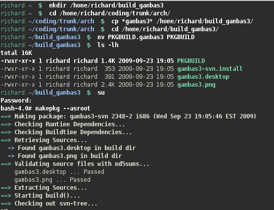

Arch
No package currently exists for the development version of Gambas 3.0 in Arch so you will need to build this from the gambas3 svn.
Either download the EasyGP source code tree by typing this at a terminal:
svn checkout svn://ozdocit.org/easygp/trunk
or download only the necessary files described below from the source code tree at http://ozdocit.org/easygp/trunk/arch directory.
Once these files are obtained you will need to:
- Create a build directory
- Copy the gambas3 files into that build directory
- Change the name of PKGBUILD.gambas3 to PKGBUILD
- Build the package by typing makepkg (or makepkg --asroot)
- Install the package the usual way using pacman e.g pacman -U gambas3-svn-pkgnumber.tar.gz

Once gambas3 has been built, you may run this, locate your downloaded EasyGP svn and run this as a project, or if you've not yet downloaded
the easygp svn, you can create an svn project from within gambas itself.
see
Downloading EasyGP